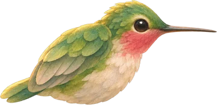
Hum from your lowest to your highest to set your range
Lend her your hum. How will you fly?
Your sound stays in your browser. Nothing is recorded or sent.
Play it right here. Pick how to fly, wait for 3-2-1, go. You can switch any time with the two buttons above.
With the microphone: first a short warm-up. Hum from your lowest to your highest and the four lanes fit themselves to your voice, then she flies. Handing over to someone else? Press New player and the range is set again for them. Your sound is analysed on this page, inside your browser. Nothing is recorded and nothing is sent anywhere.
Without it: hold the scene (or Space) to hum · move up and down (or ↑ ↓) to change pitch · let go on a perch to breathe her song back in. If she drops, she drifts back to her last perch.
A voice and breath biofeedback mini game inside My Friend Riley. A hummingbird lands hurt on your balcony, and your hum carries her home: from grey city streets, past the suburbs and the outskirts, to the jungle where her family is waiting. The microphone hears your breath as a hum and the bird shows it back to you at once. Hum and she flies. Change your pitch and she changes lane. Stop to breathe and she rests. Every flight is a breathing exercise that never says so.
One day I was sitting in my backyard, enjoying the sun, when a hummingbird came and rested on a branch of the fall grapevine.
She comes there every day. We see each other.
One day I wondered what her day must look like. She leaves her home somewhere far, far away to come to work at mine. She works tirelessly, many times a day, and takes little rests like this one in between. That is when we catch each other.
And then I thought: what if she gets hurt one day, and cannot find her way back home to her babies? What would happen then?
That is how the idea for this game came.
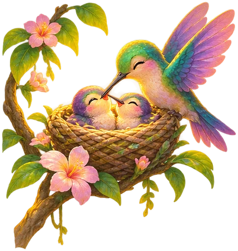
Gameplay recorded from the real game. Press play, or open it on YouTube.
The flight at the top of this page is a slice of this game that runs in your browser, with your microphone if you let it.
It is a browser port, not the Unity build. Unity's web player has no microphone support yet, so the game itself cannot listen from a web page. What runs here is the game's own lane-fitting and flight rules rewritten in JavaScript with the same numbers: 8 seconds of song in a full breath, 2.5 seconds on a perch to breathe it back, a 6 m/s cruise, lanes cut from the range you actually hum, and a climb that tops out at 6.5 m/s after a fall. The part that decides "is this a hum?" is simpler here than Riley's hum engine. Obstacles, bubbles and scoring are left out of this slice. In the real game, in most moods, dropping onto the thorns ends the flight.
Biofeedback means showing a body signal back to the person it belongs to, as it happens, so they can learn to steer it. Here the signal is the breath, heard through the voice, and the read-out is a bird.
You cannot hum while you breathe in. So a game where humming is the only thing keeping a bird in the air is a game about long, steady exhales, and I never have to say the words "breathing exercise" to a child.
| What the mic hears | What the child sees, at once |
|---|---|
| A hum starts | She lifts off and flies |
| The hum stops | She dips in the same instant, then falls |
| How high the hum is | Which of the four lanes she flies in |
| How loud the hum is | A little more speed, up to 30%, and a brighter ribbon behind her |
| How long the breath out has lasted | The Song meter draining |
| A quiet breath in, on a perch | The Song meter filling back up |
What it does not read is the heart. There is no pulse sensor and no heart-rate number in HumBird. The loop is closed on the breath alone, with the one sensor every phone already has.
The Song meter is the breath gauge. It drains only while she is flying on your hum and it refills only while she sits on a perch and you are quiet. Gaps between perches are sized to one comfortable hum: about 4 seconds early in a flight, growing to about 6.5. Add the rest it takes to breathe that much song back and one loop of fly-then-perch takes roughly 5 to 9 seconds.
This is a design target, not a clinical result. Nobody has measured a child's heart rate against this game yet. What the structure does guarantee is the shape of the breath: out for the length of a flight, in for the length of a rest, again and again, with a bird to care about instead of a counter.
Pitch picks the lane. The colours and order are the same four bands as the HumDial in Riley's hum ride, turned on their side, so a child who has done the ride already knows this language.
The lanes are not fixed notes. The game listens to the range a player actually hums in, trims a little off each end so nobody has to strain for the top or growl for the bottom, and cuts what is left into four. A child humming at, say, 280–450 Hz and a parent at 120–220 Hz both get four reachable lanes. Until it has heard enough, it falls back to the HumDial's fixed bands.
Every session opens on one card. It asks what you would like today, and who is flying. The first answer shapes the course. The second decides whose voice the lanes are fitted to, and whether anything is saved.
A guest gets fresh pitch lanes fitted to their own voice.
Nothing a guest does is saved, and it never changes yours.
Everyday. “A bit of everything: high and low, quick and calm.”
The card redrawn for this page with the game's own words. Tap its buttons to see what each one does.
The mood does not change the rules. It changes where the nectar line runs, how long the hums are, and how much is in the way. One course builder reads one small profile per mood.
The nectar runs along the two high lanes, about 80% of the way. The low lanes are the cluttered ones. A touch faster, more speed bubbles.
The mirror image. Long, soft, low hums, slower flight, fewer things that move, mostly shield bubbles.
The game exactly as tuned. Hums of about 4 seconds that grow toward 6.5 as the flight goes on.
Short legs, perches sometimes two lanes away, obstacles scattered off the line, a bubble on most legs, and your own best score to beat.
Slow, with no speed-up. A perch about every 20 metres, almost nothing in the way, and no thorns: the flight lasts as long as she wants.
SOS matters most to me. Riley is built first for kids managing Type 1 Diabetes, and some days are simply bad days. On those days the game should ask for nothing but the breath. Choosing SOS is never remembered as the default, and it is written into the day's log so a parent can see that it was an SOS day.
One rule holds in every mood: the nectar line is always safe. Extra obstacles are only ever placed off the line, never in a lane it is about to cross.
For the first few days I was the only one who had ever hummed at this game. Then we started letting new people try it. And afterwards, the game stopped reading my own voice properly.
My low hum, the one that used to put her in the LOW lane, was now being read as MID. Sometimes she fluttered between the two as if she could not decide.
range 99-365 Hz. My own voice does not go down to 99 Hz. The game believed it did.The lanes as the game had cut them after the stretch, worked out from the read-out's range and the game's own lane rule. 99 Hz was the guest's lowest note, not mine. Pitch is spaced the way ears hear it, so each lane is the same musical width. The hatched ends are the trim that keeps anyone from straining.
Nobody had done anything wrong. The game is built to fit itself to a voice, and it had done exactly that. It had just fitted itself to two people at once and did not know it. The fitting made the game playable for every voice. It also assumed there would only ever be one.
A game for a child does not stay in one pair of hands. It gets passed to a parent, a sibling, a friend. So the fix was not a better pitch tracker. It was a question.
My note after a playtest: when I stopped humming at the top lane and started again, she shot straight back up "like a paper plane". Almost weightless. I wanted her to feel like a bird climbing height.
The flight rules run without the game engine too, so the note could be measured before it was changed. The climb back after a one-second fall was peaking at about 94 metres per second. No wonder. The fix was one rule: when the hum comes back mid-fall, the climb eases in and has a top speed, until she is back in her lane. Ordinary lane changes while humming stay as quick as they were.
| Quiet for | She falls | Climb back, before | Climb back, now |
|---|---|---|---|
| 0.2 s | 0.7 m | 0.12 s | 0.27 s |
| 0.4 s | 2.2 m | 0.15 s | 0.48 s |
| 1.0 s | 6.7 m | 0.18 s | 1.22 s |
A quick breath still costs almost nothing. A long silence now has to be earned back, at about the pace she fell. You can feel the new rule in the demo at the top of this page: let her drop a long way, then hum.
A storm blew her into the city. Home is the deep jungle. I planned the level as that one trip, in five beats, so that the reward for flying further is the world itself changing around her.
A breathing exercise is the same thing over and over. That is the point of it, and also why children drop it. So everything around the breath had to keep changing. Each area changes four things at once: the light, what the land is made of, where she rests, and what gets in her way.
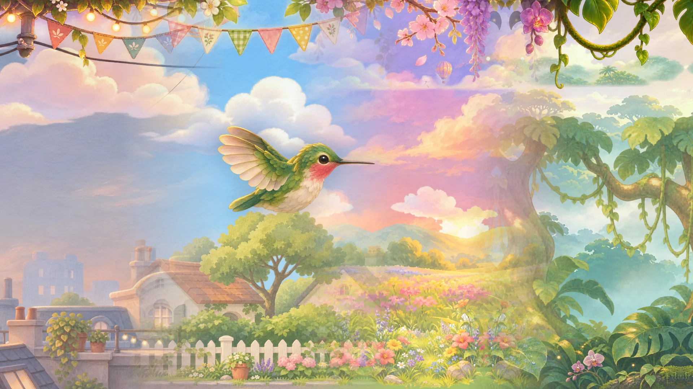
Her whole way home in one frame, composed for this page from the game's own parallax layers and bird puppet. Not a screenshot.
| 01 · City Grey Streets | 02 · Suburbs Green Edges | 03 · Outskirts Bloom Fields | 04 · Jungle Deep Canopy | 05 · Home Homecoming · planned | |
|---|---|---|---|---|---|
| The light | Grey-blue dawn | Clear morning blue | Peach and gold, late afternoon | Green shade, mist, dusk coming | A dusk clearing lit by fireflies |
| The land | Skyline, rooftops, a street | Houses, hedges, a white fence | Rolling hills and a field of flowers | Tall trees, giant leaves, hanging vines | One nest among blossoms |
| She rests on | Traffic light, streetlamp, mailbox, clothesline, café teacup, balcony rail, awning, AC unit | Fence post, sunflower, washing line | Mushroom cap, giant leaf, hanging vine, sunflower | A toucan's branch, a giant leaf, a vine, a monkey's open hand, an elephant's trunk | Home |
| In her way | Pigeon flock, kite string, an umbrella popping open, a passing bus, scooter smoke | Sprinkler, frisbee, falling blossom | Dragonfly, falling blossom | Swinging monkey, sleepy snake, parrot flock, waterfall, falling mango | Nothing. One long, gentle flight. |
| How close the world is | Scenery fills 41% of the screen's height | 46% | 63% | 70% | — |
Columns one to four are what the build draws today, read from its area list. The fifth is designed and its nest is painted, but it is not built yet.
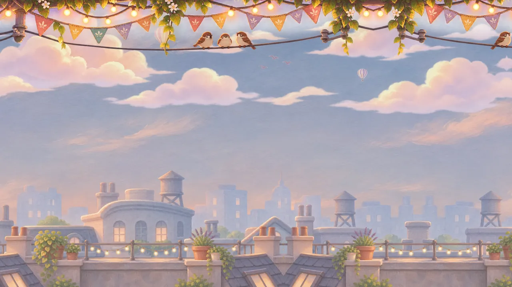
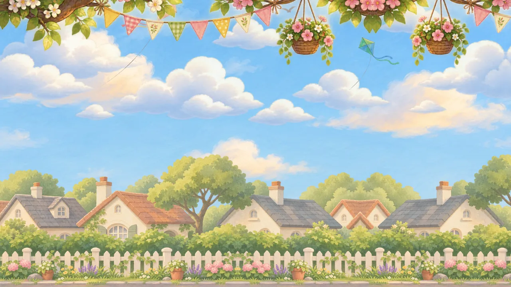
Each frame is the game's layers stacked the way the scenery code stacks them. Not screenshots.
Seventeen perches, each one something a tired bird might really pick in that part of the world. Left to right, city to jungle.
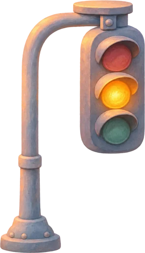
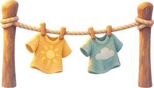
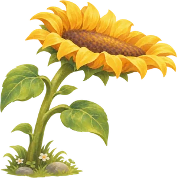
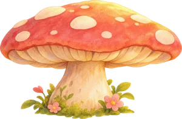
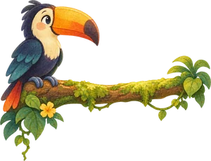
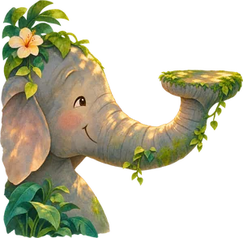
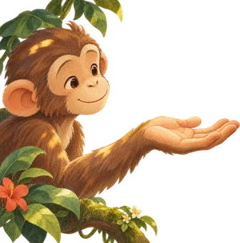
Fifteen obstacles, and nothing ever gets shot. A bump is a tumble, not a death. Two bubbles help: one for speed, one that takes a bump for her.
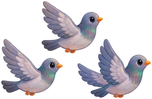
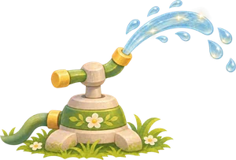
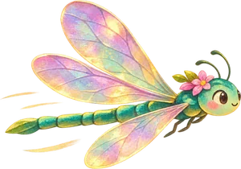
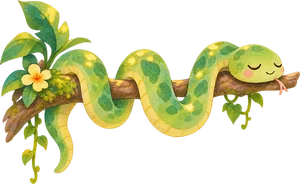
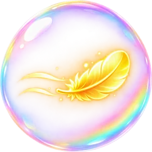
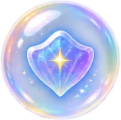
The spec was written for the whole journey. The build order was the opposite: get one thing right first, the feeling of a hum turning into flight, and only then spend time on everything around it.
A biofeedback game lives or dies on delay. If the bird answers late, the child stops believing the bird is them. So the path from microphone to wing is short, and every step of it has one job.
Unity MicrophoneHumTunnelControllerHumBirdInputVoiceRange · LaneQuantizerBirdFlightModel · SongMeterHumBirdCourse · HumBirdGreybox · Scenery · Audio · Score| The number | Value | Why |
|---|---|---|
| Listening window | 43 ms | Long enough to find the pitch of a low hum |
| "She stopped" is judged on | the newest 15 ms | Going quiet has to be felt at once |
| Grace before the hum counts as over | 40 ms | One crackle should not drop her |
| A new note needs | 2 readings that agree | The scratchy start of a hum cannot throw her into the wrong lane |
| Lane edges are sticky by | 4% of the range | A wobble is not a lane change |
| Trim at each end of the range | 8% | Nobody strains for the top lane |
| Lanes fit once they have heard | 80 Hz of range | Before that, fixed bands from the HumDial |
| The range can grow by | 150 Hz a second | One wrong pitch reading cannot squash every lane |
HumBird started as a design spec on November 5 and a grey-box prototype behind the garden's Nature Magic button on November 9. It could move that fast because the hard part already existed.
HumBird is a playable biofeedback prototype inside My Friend Riley. The flight, the four lanes fitted to a voice, perches and the Song meter, all four areas, both bubbles, scoring, the five moods and the Who is flying? card are in and running in the Unity editor.